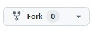

Visual Studio Code en PlatformIO
In deze sectie lees je hoe je Visual Studio Code (VS Code) en PlatformIO installeert voor het ontwikkelen van microcontrollerprojecten.
Installeren van Visual Studio Code
Ga naar de officiele website: https://code.visualstudio.com/.
Download de versie voor jouw besturingssysteem.
Volg de installatiestappen op het scherm.
Installeren van de Python-extensie
Open Visual Studio Code.
Open Extensions via het zijbalk-icoon of met
Ctrl+Shift+X.Zoek op
Python.Klik op
Install.
Verkrijgen van de workshopbestanden
Om te starten heb je de workshopbestanden nodig met code, schema’s en opdrachtinstructies.
Download de bestanden als ZIP via: Download Workshop Bestanden
Pak het ZIP-bestand uit in een map die je makkelijk terugvindt.
Als je al bekend bent met Git en github, kun je de bestanden ook via Github verkrijgen. Volg de onderstaande stappen:
Maak een account aan bij Github en login op dit account
Open de UfactoryLite6VisionWorkshop repository
Maak een Fork van de repository naar je eigen Github account door op het Fork icoon te klikken:

Volg de instructies, maar wijzig de naam van de nieuwe repository niet. Bevestig met Create Fork
Nu kun je de workshop clonen naar je lokale machine:
git clone https://github.com/<jouw_account_naam>/UfactoryLite6VisionWorkshop.git
Waarschuwing
Plaats de bestanden niet in een OneDrive-map. Dit kan compileerproblemen veroorzaken.